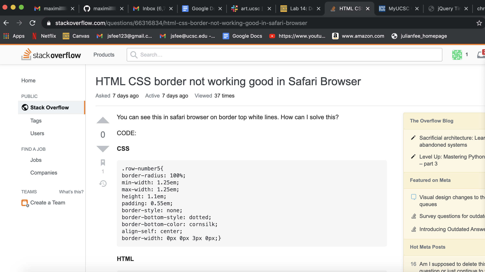
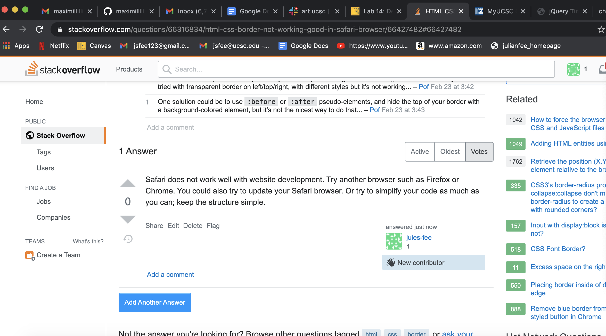

Lab 14:Debugging
Challenges:
The challenge of this lab is to practice debugging methods by debugging any previous labs that are not working right.
Problems:
We had a lot of trouble finding questions that we had the skills to answer on Stack Overflow. We also feel as though this lab should have been implemented at the beginning of the course, not week 9. Debugging strategies would have been extremely helpful at the start of this course so we could use them for the labs that we had difficulty with. We also had some trouble with the fact that we did not have the same partners
Results:
See our results in the document and bellow in the debugging section.
 Debugging:
All of our labs were in working condition and we could not find anything that needed debugging.